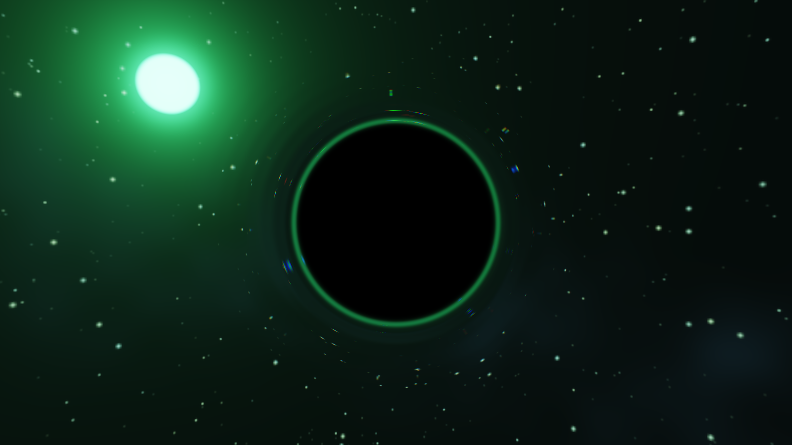
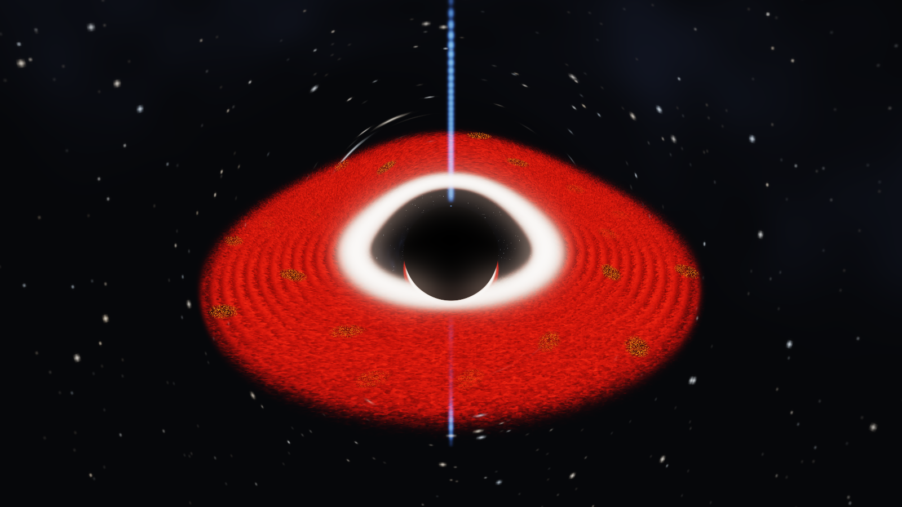
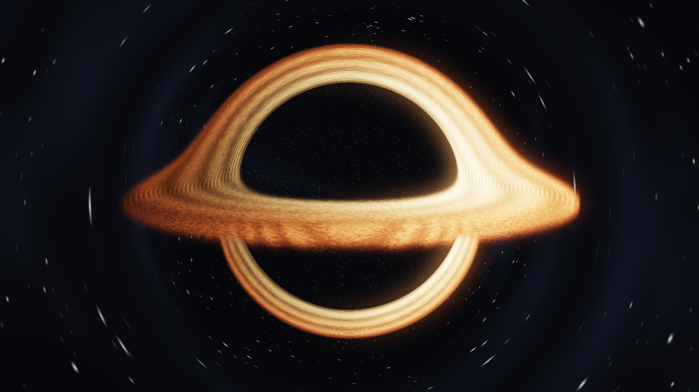
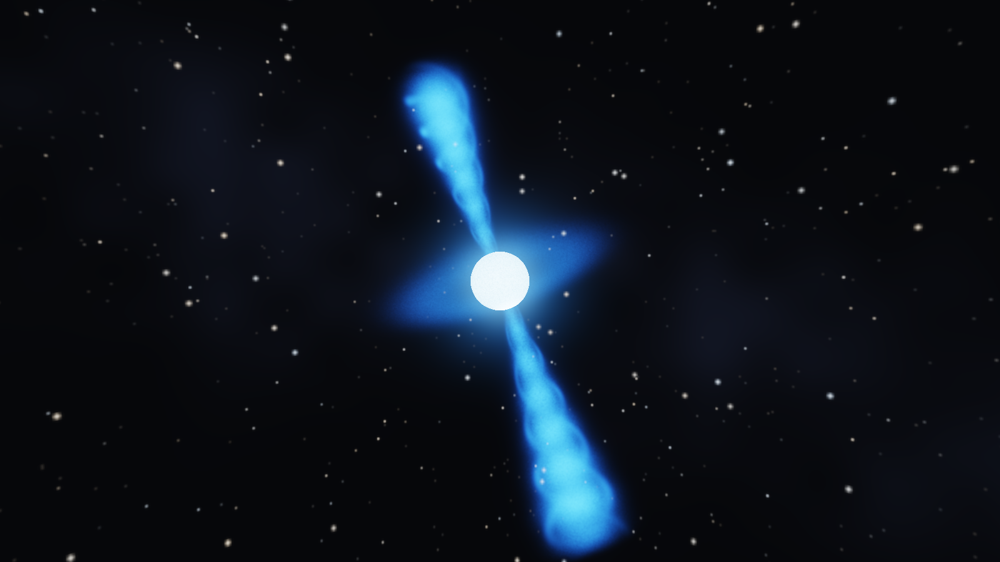
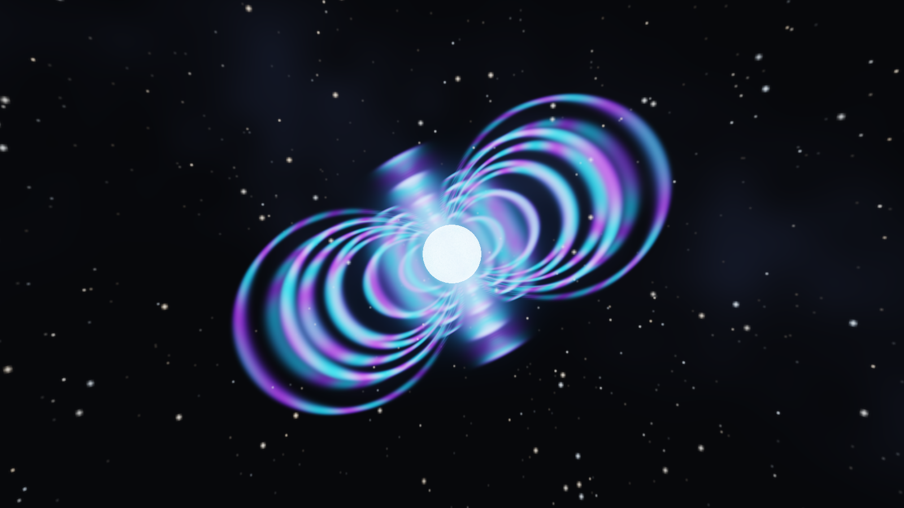
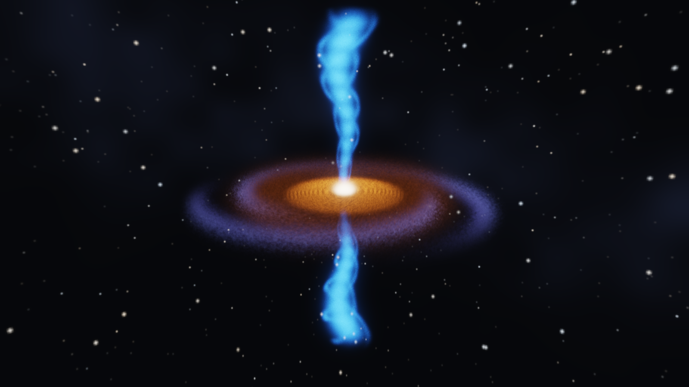
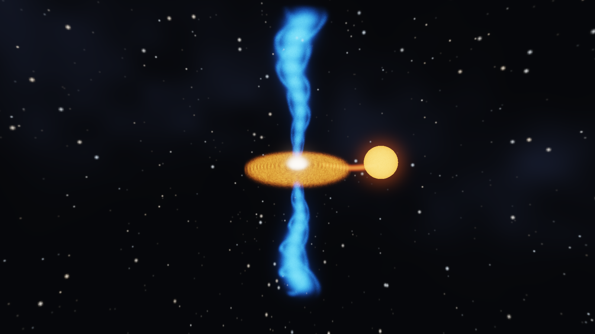
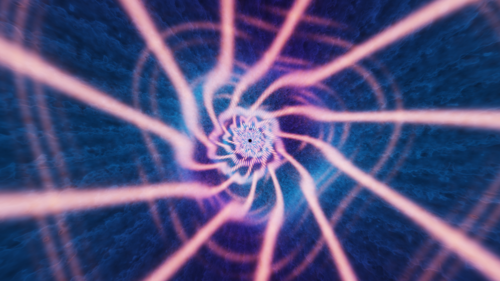
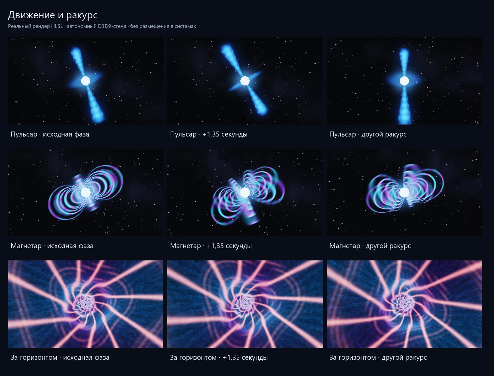
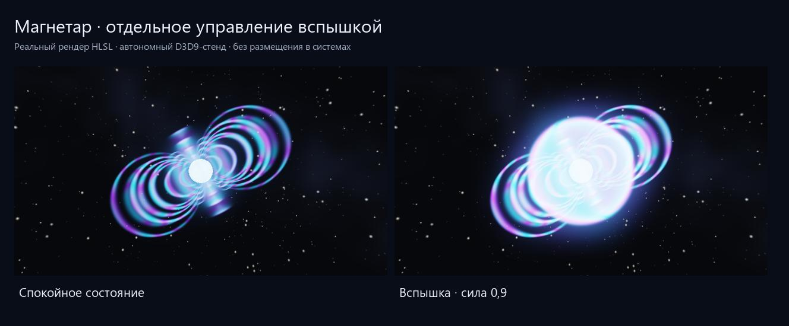

Космическое шапито · шейдерная лаборатория
Freelancer · The Nomad Legacy · shader studies / 01
Космическое
шапито
Три чёрные дыры, пульсар, магнетар, квазар, микроквазар и бонусный взгляд за горизонт. Яркий цвет, преувеличенный масштаб, живая плазма и намеренно невозможные пространства.
Все изображения ниже — реальные кадры написанных HLSL-шейдеров. Автономный D3D9-стенд, 1600 × 900. Это базовые художественные прототипы; в игровые системы они не установлены.

Monkey · зелёное преломление
Тёмное ядро и преломляющая оболочка; свет зелёного солнца растягивается по краю. Отражающего материала нет.

Intro · красный диск
По публичному трейлеру 1:24: красный диск, белое внутреннее кольцо, тёмное ядро, тонкий полярный луч и раскалённые обломки. Шейдерная интерпретация, не копия старого ALE.

Чёрная дыра · горячий диск
Авторский вариант: искривлённые лучи, золотой аккреционный диск и асимметрия яркости. Приближённая визуальная модель, не решение ОТО.

Пульсар · вращающийся маяк
Два объёмных конуса на наклонённой магнитной оси вращаются в трёхмерном пространстве. Радиоизлучение условно показано голубым светом.

Магнетар · магнитные дуги
Пространственные петли дипольного поля, движение свечения по дугам и отдельный параметр вспышки. Видимые линии поля — художественная визуализация.

Квазар · активное ядро
Яркое ядро, аккреционный диск, поглощающий пылевой тор и два неоднородных джета. Масштабы сжаты для читаемого эскиза.

Микроквазар · двойная система
Звезда-донор, поток перетекания вещества, компактный диск и два джета. Отдельная композиция для объекта, к которому можно подлететь.

За горизонтом · собор света
Бонусный художественный эскиз: объёмный тоннель из золотых рёбер, синих облаков и закрученных световых нитей. Полностью вымышленное пространство для игры.
Движение и ракурс
Второй столбец: то же положение камеры через 1,35 секунды. Третий: поворот камеры на 0,65 радиана; внутри тоннеля — поворот взгляда вокруг его оси.

Вспышка магнетара
Отдельный параметр усиливает дуги и добавляет расширяющуюся оболочку. В обычном состоянии он равен нулю.

Что уже проверено
Компиляция Shader Model 3, создание шейдеров на GPU, чтение HDR без NaN/Inf, изменение изображения при смене времени и ракурса, воспроизводимость кадра и управление вспышкой. Это проверка прототипов, а не измерение скорости в игре.
Журнал GPU-проверки · Параметры вариантов